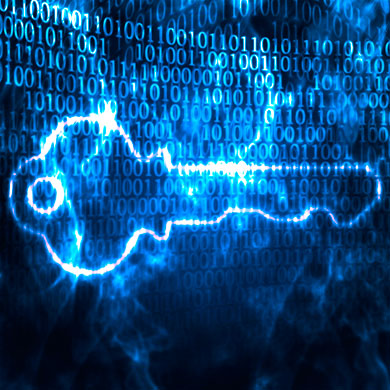

Introdução
Desde épocas antigas, as pessoas usam códigos e cifras para proteger informações que tenham alguma importância para si e querem que somente pessoas específicas tenham o acesso necessário.
Personagens como Alexandre, O Grande, e Júlio César tinham necessidade de enviar mensagens secretas a destinatários de sua confiança, porém havia um sério problema: as mensagens teriam que ser transportadas por mensageiros que às vezes não eram tão confiáveis, pois poderiam ser facilmente manipulados.
Na Segunda Guerra Mundial, Hitler também tinha a necessidade de enviar mensagens aos seus comandados de forma secreta e para isso utilizava algumas engenhocas mecânicas criadas na época para ajudá-lo. A mais famosa delas foi uma máquina conhecida como Enigma. Essa engenhoca era uma máquina eletromecânica que permitia embaralhar as letras quando a pessoa digitasse algo nela. Possuía uma série de rotores que eram utilizados tanto para o processo de embaralhamento das letras como para o processo inverso.
Os países aliados conseguiram ter acesso a uma dessas máquinas e depois de algum tempo conseguiram quebrar os códigos utilizados por ela, decifrando as mensagens de rádio que eram enviadas criptografadas pelos alemães
Hoje, quem luta para interceptar e decifrar arquivos com conteúdo de valor são os espiões industriais, ladrões e os famosos crackers.
No mundo atual grande parte das informações das empresas encontra-se localizada dentro dos Servidores corporativos e das estações de trabalho, que diariamente manipulam e transmitem informações com rapidez e precisão.
Os códigos e as cifras secretas que no passado eram difíceis de serem quebrados e que demoravam um período de tempo muito elevado para serem descobertos, agora, com a utilização de potentes computadores, necessitam apenas de alguns segundos para serem quebrados.
Devido ao crescente aumento do uso das redes de computadores, bem como da utilização pelas empresas da internet em grande escala, surgiu a necessidade de se utilizar mecanismos mais seguros para tentar diminuir o risco de a organização ter suas informações confidencias roubadas quando utilizar o novo meio de fazer negócio, uma vez que os atacantes ou intrusos da internet se utilizam de meios cada vez mais sofisticados para violar a privacidade e a segurança durante a comunicação das empresas.
De forma geral, a segurança dentro da infraestrutura de Tecnologia da Informação consiste na busca de soluções que garantam que as informações de uso restrito não serão acessadas, manipuladas ou modificadas por pessoas não autorizadas.
Uma das maneiras para atingir o objetivo informado anteriormente é a utilização da criptografia como um meio efetivo de proteção das informações que estão sempre sujeitas a ataques, estejam elas armazenadas em um computador ou sendo transmitidas pela rede.
Terminologias importantes
Algoritmos
Podemos demonstrar um exemplo de algoritmo como sendo uma receita de bolo. Dentro dela existem os procedimentos dizendo quais os ingredientes e como você deve combiná-los para que no final você tenha um bolo feito. Quando uma pessoa utiliza essa receita, executa-a passo a passo para fazer o bolo. Durante o procedimento, uma série de decisões extras e que não constam na receita deverão ser tomadas (desde a escolha do tipo de manteiga até o tipo de farinha que deverá ser utilizado etc).
Ao transportarmos o conceito de algoritmo para o mundo da informática, dizemos que um algoritmo representa um modelo esquemático para a resolução de um problema computacional, mostrando quais ações devem ser tomadas e em qual ordem.
- Criptografar\encriptar: é o processo de codificar uma mensagem de modo que seu significado seja escondido, ou seja, é o processo que irá transformar uma mensagem (texto simples) em outra (texto cifrado), utilizando uma função matemática e uma senha de criptografia (chave).
- Descriptografar\decriptar: processo que transforma uma mensagem que se encontra criptografada em sua forma original, ou seja, transforma um texto cifrado em texto original, utilizando uma função matemática e uma chave.
- Chave: é uma parte de informação necessária para decifrar uma mensagem, geralmente na forma de um valor usado com a cifra para criptografar a mensagem.
- Criptossistema: sistema para criptografar e descriptografar.
- Cifra de bloco: cifra projetada para operar em blocos de dados de tamanho fixo.
- Cifra de fluxo: cifra projetada para operar em um fluxo de dados contínuos.
Observação: frequentemente usam-se as palavras codificar ou cifrar em vezde encriptar/criptografar e decodificar ou decifrar em vez de descriptografar.
Definição de criptografia
A palavra criptografia vem de (Kriptus = escondido, oculto; grápho = grafia) e pode ser definida como a arte ou ciência de escrever em cifra ou em códigos uma mensagem, de forma a permitir que somente o destinatário ou quem possua a cifra ou o código consiga decifrar e entender o conteúdo da mensagem. A criptografia aplica um algoritmo matemático a um conjunto de dados, que serão transformados de forma que ninguém consiga decifrá-los. O processo de criptografia de um documento sempre adota os seguintes princípios: um algoritmo que funcionará como uma fórmula matemática utilizada para converter os dados originais em um texto cifrado. Esses algoritmos dependerão de uma variável, chamada chave, que deverá ser fornecida pelo usuário. Dessa maneira, a chave funcionará como uma senha, e assim somente de posse dela será possível decifrar o texto que esteja criptografado.
Criptoanálise
A Criptoanálise é a ciência que estuda os princípios, processos e métodos que devem ser utilizados para se tentar desvendar os segredos dos sistemas criptográficos sem que a pessoa que esteja tentando descobri-lo tenha conhecimento da chave secreta. O processo da criptoanálise é feito apenas para tentar quebrar o código da mensagem cifrada, e não em decifrá-lo ou seja tentar identificar como o código foi criado.
A pessoa responsável por quebrar o código tenta descobrir algumas vulnerabilidades na estrutura do código criptográfico em um tempo razoável. Tenta-se para isso utilizar uma combinação de raciocínio analítico, bem como ferramentas matemáticas na busca de padrões que possam indicar as maneiras para quebrar os códigos criptográficos.
Funcionamento da criptografia
Um algoritmo de criptografia trabalha em conjunto com uma chave, podendo ela ser uma palavra, um número ou uma frase, que será utilizada para fazer o processo de criptografia dos dados. Quando se aplica um algoritmo criptográfico em uma mensagem, os mesmos dados podem gerar diferentes resultados quando forem encriptados usando chaves diferentes mesmo que seja o mesmo algoritmo. Dessa forma, se a chave for mudada, para um mesmo conjunto de dados geraremos dados criptografados completamente diferentes. Com isso concluímos que a segurança dos dados criptografados completamente depende de duas coisas: a força do algoritmo utilizado para fazer o processo de criptografia e a chave que está sendo utilizada.
Técnicas básicas de criptografia
Cifra de transposição: reorganiza a ordem dos bits, caracteres ou bloco de caracteres.
Cifra de substituição: troca os bits, caracteres ou blocos de caracteres por outros (por exemplo, a substituição de uma letra por outra).
Exemplo muito simples de transposição: as letras do texto original (texto plano) são embaralhadas. Com esse tipo de cifra, essas letras são preservadas, existe somente uma troca de posições.
| Texto plano | Processo | Resultado Final |
|---|---|---|
| UNINOVE | ENCRIPTAÇÃO | INVEOUN |
Exemplo muito simples de cifra de substituição: as letras do texto plano são trocadas por outras letras, números ou símbolos. Com esse tipo de cifra, as posições originais das letras do texto plano são preservadas, mas as letras são substituídas por outras.
Troca de cada letra do alfabeto pela próxima letra do alfabeto:
| Texto plano | Processo | Resultado Final |
|---|---|---|
| UNINOVE | ENCRIPTAÇÃO | VOJOPWF |
| Texto plano | Processo | Resultado Final |
|---|---|---|
| UNINOVE | ENCRIPTAÇÃO | INVEOUN |
| Texto plano | Processo | Resultado Final |
|---|---|---|
| UNINOVE | ENCRIPTAÇÃO | VOJOPWF |
Criptografia convencional (simétrica)

Na criptografia convencional, também denominada encriptação de chave secreta (privada) ou de chave simétrica, uma chave apenas é usada para fazer o processo de criptografar e descritografar. Nesse tipo, uma mesma chave é usada para cifrar os dados e criar um novo documento, ilegível para quem não esteja de posse dessa chave, bem como é utilizada para fazer o processo inverso, ou seja, transformar o texto escondido novamente no texto original. Assim, essa chave que é igual (simétrica) para os dois processos deve ficar guardada em segredo.
As principais vantagens da utilização desse tipo de criptografia estão relacionadas à facilidade de uso e à sua rapidez durante o processo de cifragem dos dados.
A principal desvantagem é que a chave que é utilizada para fazer o processo de cifragem dos dados necessita ser compartilhada por duas ou mais pessoas, e pode acontecer que, durante o processo da troca das chaves, ela seja interceptada por alguém que não deveria ter acesso a ela e com esse acesso poderá ler, modificar ou até mesmo forjar todas as informações que estavam criptografadas.
Esse cenário apresenta o seguinte problema: como fazer que o emissor e o receptor troquem a chave de segurança que será utilizada no processo de criptografia sem que ela seja interceptada por parte de alguém que não deveria ter acesso? A solução conseguida foi a de que o envio dessa chave fosse sempre feito utilizando um canal de comunicação diferente daquele por onde seria enviada a mensagem criptografada.
A criptografia simétrica apresenta outro problema que está relacionado à necessidade do gerenciamento das chaves que foram criadas, uma vez que é necessário criar uma chave para cada pessoa a quem se queira encaminhar a mensagem secreta. No caso de N usuários, deverão ser criados os mesmos números N de chaves.
Cifra de César
Um exemplo extremamente simples de criptografia convencional é uma que utiliza no seu processo a cifragem por substituição. A cifragem por substituição substitui um pedaço de informação por outro, podendo este processo ser feito deslocando-se letras do alfabeto, por exemplo, sendo que a chave será o número de letras que devem ser deslocadas pelo algoritmo.
Por exemplo, se codificarmos a palavra "AMOR" usando a chave de César com o valor 3 (chave), estaremos deslocando nas letras do alfabeto 3 letras para a frente, fazendo com que a terceira letra se transforme na letra (D) e, dessa forma, teremos então:
Texto plano a ser criptografado plano:
(ABCDEFGHIJKLMNOPQRSTUVWXYZ)
Texto cifrado utilizando a cifra de substituição: DEFGHIJKLMNOPQRSTUVWXYZABC
CHAVE Deslocamento de 3 posições
Onde a palavra AMOR será cifrada para a palavra DPRU
Exemplos de algoritmos simétricos
- DES Data Encryption Standard (1977) – 56 bits.
- IDEA (International Data Encryption Algorithm (1994)) 128 bits.
- 3DES "Triple DES" (1995), onde o algoritmo é aplicado 3 vezes em sequência com 3 chaves distintas (168 bits) ou 2 distintas 112 bits.
- RC2 com chaves entre 1 e 1028 bits e RC4 com chaves que podem variar entre 1 e 2048 bits.
Infelizmente, pela própria natureza, qualquer sistema mais seguro é também mais desagradável de se usar. Portanto, não se deve exagerar na complicação, senão os usuários vão achar meios de contornar o sistema. Uma encriptação é dita computacionalmente segura quando atende a estes dois critérios:
- O custo para quebrar o cifrador excede o valor da informação encriptada.
- O tempo para quebrar o cifrador excede o tempo de vida útil da informação.
Criptografia assimétrica
O método de criptografia mais difundido no mundo utiliza a técnica de chave pública/chave privada. A criptografia assimétrica é uma fórmula matemática que gera duas chaves, uma pública e outra privada (ou secreta).
A chave pública é a chave que deverá ser utilizada por qualquer pessoa que tenha interesse de encaminhar a mensagem para outra pessoa de forma que somente ela consiga abrir a mensagem criptografada. Assim, essa chave necessita ficar armazenada em algum lugar, e qualquer pessoa pode saber qual é a chave utilizada para fazer o processo de criptografia dos dados. Já a chave privada é a que somente o destinatário dos dados deve conhecer. Ela será utilizada para fazer o processo inverso ao que foi feito pela chave pública, ou seja, "abrir" os dados que ficaram aparentemente sem sentido. É importante destacar que a partir da chave pública não é possível descriptografar os dados nem tampouco deduzir qual é a chave privada que será utilizada para o processo de descriptografia.
Como uma chave encripta e a outra descripta, saber uma das duas chaves não dá pistas para a outra. O processo de criação delas (pública e privada) é feito ao mesmo tempo, ou seja, são geradas ao mesmo tempo num ambiente seguro e fechado.
Como nesse tipo de criptografia são usadas duas chaves, ele é chamado de criptografia assimétrica.
Nesse tipo de criptografia, quando ocorre o processo de comunicação, o remetente disponibiliza a sua chave pública para o mundo e mantém a sua chave privada guardada em sigilo. Qualquer pessoa que possua uma cópia da sua chave pública pode encriptar qualquer informação e enviá-la para o remetente de forma segura, uma vez que só ele poderá lê-la.
Qualquer pessoa de posse de uma chave pública pode encriptar uma informação, mas jamais será capaz de decriptá-la, pois somente a pessoa com a chave privada correspondente poderá decriptar a informação.
O benefício da criptografia de chave pública é a possibilidade de permitir que pessoas que não possuam um sistema de segurança pré-existente possam trocar informações de forma segura, uma vez que não existe mais a necessidade de compartilhamento de chaves secretas através de um canal de distribuição.
O processo de encriptação da comunicação envolve apenas as chaves públicas, sendo que a chave privada nunca é compartilhada ou transmitida.
Um exemplo desse processo pode ser explicado a seguir:
O usuário Édison, que deseja comunicar-se de forma segura com a usuária Gabriela, gera uma chave de ciframento e sua correspondente chave de deciframento. Ele mantém a sua chave secreta (nesse caso, a chave privada), que é a chave de deciframento, e torna pública a chave de ciframento (nesse caso, a chave pública). De posse dessa chave, Gabriela poderá cifrar sua mensagem e enviar para Édison, que possui a chave privada que será utilizada para descriptar o arquivo enviado facilmente.
Nesse formato de comunicação, mesmo que um invasor intercepte a mensagem em trânsito, ele não conhecerá a chave privada de Édison, embora possa até conhecer a sua chave pública, e por isso não terá acesso à mensagem.
É importante dizer que mesmo a pessoa que cifrou a mensagem com a chave pública do destinatário não pode decifrá-la, pois não possui a chave privada.
A grande vantagem desse sistema é permitir que qualquer pessoa possa enviar uma mensagem secreta apenas utilizando a chave pública de quem irá recebê-la.
Como a chave pública está amplamente disponível, não há necessidade do envio de chaves como é feito no modelo simétrico. Assim, a confidencialidade da mensagem é garantida, enquanto a chave privada estiver segura.
Exemplos de algoritmos assimétricos:
-
RSA:
É um algoritmo de encriptação de dados, que deve o seu nome a três professores do Instituto MIT, Ron Rivest, Adi Shamir e Len Adleman. -
ElGamal:
É um algoritmo que envolve a manipulação matemática de grandes quantidades numéricas. -
Diffie-Hellman:
É um método de criptografia desenvolvido por Whitfield Diffie e Martin Hellman e publicado em 1976. Esse sistema define uma forma de se trocar chaves de criptografia entre dois sistemas. -
Curvas Elípticas:
Proposto em 1985 por Neal Koblitz e V. S. Miller. Os sistemas criptográficos de curvas elípticas consistem em modificações de outros sistemas (o ElGamal, por exemplo), que passam a trabalhar no domínio das curvas elípticas, em vez de trabalharem no domínio dos corpos finitos.